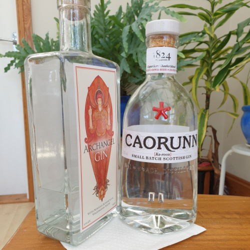
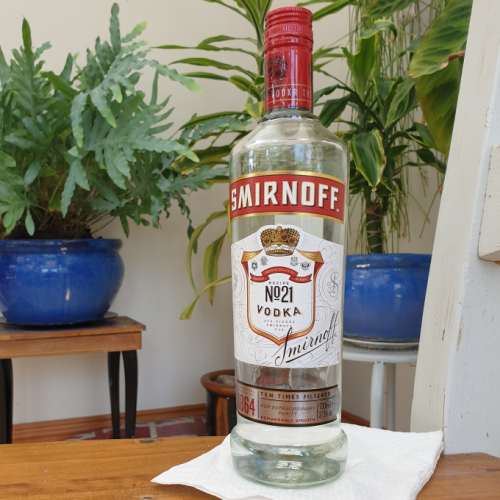
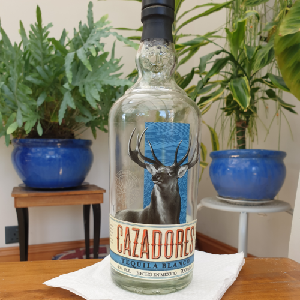
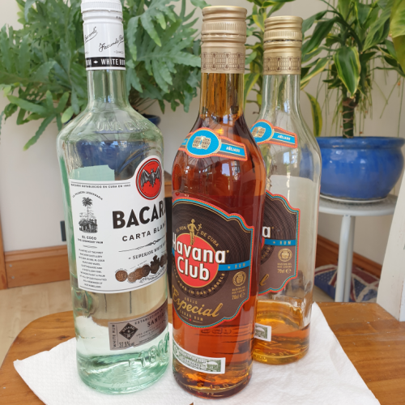
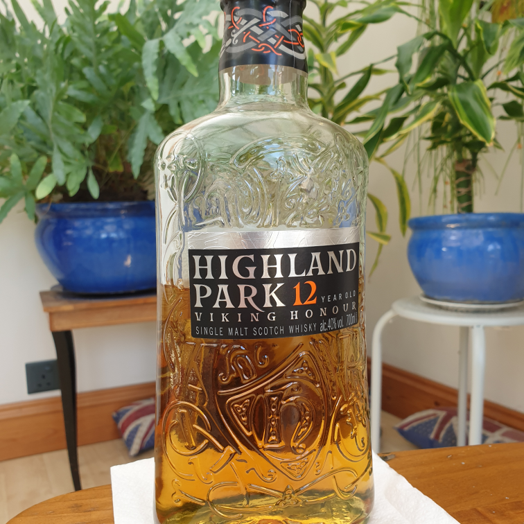

Listed here are the ingredients I have used in my recipes so far.
Spirits |
|
|---|---|
|  |
GinGin is based around the Juniper Berry and is usually accompanied by lots of other botanicals to give it a complex flavour. The most common type of gin is London Dry Gin and that is what most off-the-shelf gins in the supermarket will be and what is suitable for all gin cocktails listed on my site unless stated otherwise. Other types include the sweeter Old Tom Gin, the earthier Plymouth Gin and flavoured Gins (the most popular being Sloe Gin). Good value brands include Beefeater, Bombay Sapphire and Tanqueray. There’s also a boom in local UK Gin distilleries so have a look around your county to see what's about. |
|  |
VodkaVodka is traditionally distilled from Potatoes and Grain and doesn’t really taste of anything except alcohol in my opinion (and that’s fine).The best kind of vodkas are those that go down smooth and don’t much of an aftertaste. There is only one type of vodka though there are many different flavoured variations available. Smirnoff and Absolut are good value (avoid Russian Standard it’s shocking). |
|  |
TequilaTequila is my favourite spirit for sure. Real tequila is made from 100% blue agave and is produced in the region of Jalisco in Mexico; tasting semi-sweet, earthy and somewhat salty (in my opinion). There are three main types of tequila, Blanco/Silver (unaged), Reposado (aged 2-12 months) and (1+ years). Though most cocktails recipes will favour one type over the other, it’s totally okay to use another type if that’s all you have available. Good tequila brands include El Jimador, Jose Cuervo, Olmeca Altos and Cazadores (avoid Sierra – it’s the cheapest for a reason). |
|  |
RumRum is made by fermenting then distilling sugarcane, giving it a sweeter taste than most spirits, and is most commonly made in the Caribbean. The most common types of rum are White/Light Rum (unaged and filtered), Aged/Gold Rum (aged in a cask to give it more flavour), Dark Rum (aged the longest, usually with added sugar and spices) and Overproof/Navy-Strength Rum (more than 40% ABV). Some cocktails will definitely lend themselves to lighter rums whereas others (often Tiki cocktails) will need dark rums so the two types can’t really be switched when you run out in my opinion. Bacardi and Havana Club are great brands, avoid Captain Morgan’s. |
|  |
WhiskeyWhiskey is distilled from grains like Barley and Rye. There are many different types, the fanciest being Single Malt (distilled in a single batch) and the most suitable for making cocktails being Blended Whiskey. I don’t drink whiskey that much yet or have many recipes on it so I can’t speak for which brands are good/bad. |
Liqueurs, syrups and aperitifs |
|
|---|---|